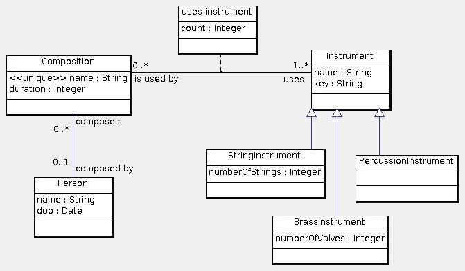

Note that in this data model, persons need not have unique names, and musical instruments may not have unique names. The abbreviation "dob" stands for "date of birth".
The schema for this data model is the following:
create table Person( id int primary key, dob date not null, name varchar(255) not null ); create table Composition( id int primary key, name varchar(255) not null unique, duration int not null, composedBy int, foreign key(composedBy) references Person(id) on update cascade on delete set null ); create table Instrument( id int primary key, name varchar(255) not null, musicalKey varchar(255) ); create table usesInstrument( isUsedBy int, foreign key(isUsedBy) references Composition(id) on update cascade on delete cascade, uses int, foreign key(uses) references Instrument(id) on update cascade on delete cascade, count int not null, primary key(isUsedBy, uses) ); create table StringInstrument( id int primary key, foreign key(id) references Instrument(id) on update cascade on delete cascade, numberOfStrings int not null ); create table BrassInstrument( id int primary key, foreign key(id) references Instrument(id) on update cascade on delete cascade, numberOfValves int not null ); create table PercussionInstrument( id int primary key, foreign key(id) references Instrument(id) on update cascade on delete cascade ); -- The following is not required: alter table Composition add foreign key(id) references usesInstrument(isUsedBy) on update no action on delete no action;
© 2011 Ken Baclawski. All rights reserved. Redistribution and use in source and binary forms, with or without modification, are permitted provided that redistributions and uses retain this copyright notice.